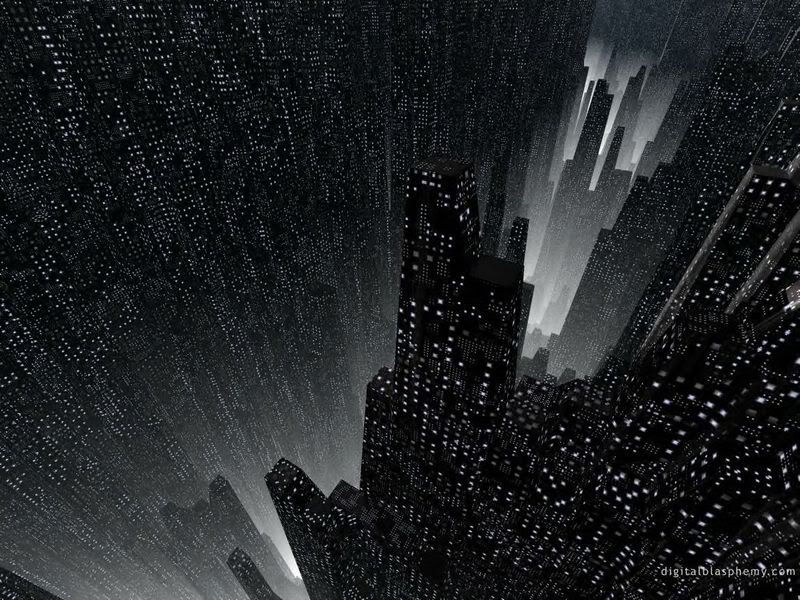

Nos sonhos da cidade Narrando um sonho
por Paulo Diovani GonçalvesO exercício de narrativa de Nos sonhos da cidade, desempenhado principalmente pelo MJ, requer alguns cuidados.
Lembre que este é um jogo narrativo (chame de RPG, se quiser), então preocupe-se em evoluir a história antes de lançar os PJs contra desafios diversos até enfrentarem os Pesadelos. Crie NPCs, adicione drama à história e justifique o que está acontecendo em cada área da cidade. Lembre também de conectar as áreas umas às outras, e não fazer delas cenários isolados.
Outra coisa a ser ter sempre em mente, é que a história se passa num sonho. Sendo assim, exagere no surrealismo, não hesite em adicionar elementos impossíveis no cenário e incentive os demais jogadores a fazerem o mesmo, especialmente ao criar Relíquias. Também não hesite em mudar drasticamente de ambiente ao passar de uma área para outra — os PJs podem sair de uma floresta mágica para um cidade flutuante altamente desenvolvida, e ainda para uma estação espacial alvejada por naves inimigas.
Recomendo a leitura de Sandman, de Neil Gaiman, como fonte de inspiração — afinal, é a principal inspiração deste jogo, além de outros livros do autor. Abuse também de referências visuais, presentes em filmes (Inception e Sucker Punk são um bom começo) e jogos (LIMBO).
A seguir vou listar algumas dicas de Como narrar um sonhos. Mas estas dicas são a minha visão de sonhos, os seus podem ser bem diferentes então apenas considere-as se elas se encaixarem no seu conceito de o que é um sonho.

Dicas para narrar um sonho
Remova a luz
Sonhos costumam ser difusos ou, pelo menos, difíceis de lembrar de detalhes como rostos de pessoas após acordar. Uma boa dica para fazer isso é “remover a luz” do cenário, que é basicamente o que o jogo LIMBO faz, com seu cenário preto e branco.
Descreva como é difícil entender as coisas à volta dos PJs, especialmente as que estão mais longe, como se estivesse muito escuro ou com uma névoa pairando constantemente no ar. Se os PJs quiserem saber mais sobre o que há no horizonte, faça-os ir até lá para investigar.
Sensações ao invés de formas
Como Lovecraft, ao descrever algo que possa intrigar os PJs, especialmente Pesadelos, diga que tipo de sentimento envolve o mesmo, e não exatamente como ele se parece.
Use metáforas sempre que possível, mesmo chegando a absurdos, como um NPC que se veste com medo ou um Pesadelo que devora a esperança de todos.
Invente novos sentidos
Deixe os PJs perceberem coisas de forma diferente de como fariam na realidade. Eles podem sentir coisas como espaço, eletricidade, escuridão, pensamentos, intenções, etc.
Use música
Pelo menos nos meu sonhos sempre parece ter algum som ou música específica.
Música ambiente influencia na percepção, use uma diferente para cada área da cidade, combinando com o sentimento que quer passar nesta área.
“A cidade está morrendo…”
Como narrado no capítulo Introdução, Nos sonhos da cidade é um jogo sobre uma cidade que é perturbada em seus sonhos por problemas de sua realidade.
Lembre-se, então, de retratá-la como tal.
A doença que impregna as ruas da cidade deve ser tangível. Descreva-a como uma névoa pestilenta ou olhos maléficos espreitando por cantos obscuros. Dê aos jogadores a sensação que algo não está certo e de perigo iminente.
Um bom exemplo de cidade obscura e com sensação de perigo eminente é o jogo e filme Silent Hill. Tente passar um clima parecido para o jogo.
créditos da imagem: coolchaser
 Nos sonhos da cidade por Paulo Diovani Gonçalves está licenciado sob uma licença Creative Commons Atribuição – Compartilhamento pela mesma Licença (by-sa) 4.0 Internacional. Nos sonhos da cidade por Paulo Diovani Gonçalves está licenciado sob uma licença Creative Commons Atribuição – Compartilhamento pela mesma Licença (by-sa) 4.0 Internacional.
Nos sonhos da cidade por Paulo Diovani Gonçalves está licenciado sob uma licença Creative Commons Atribuição – Compartilhamento pela mesma Licença (by-sa) 4.0 Internacional. Nos sonhos da cidade por Paulo Diovani Gonçalves está licenciado sob uma licença Creative Commons Atribuição – Compartilhamento pela mesma Licença (by-sa) 4.0 Internacional.